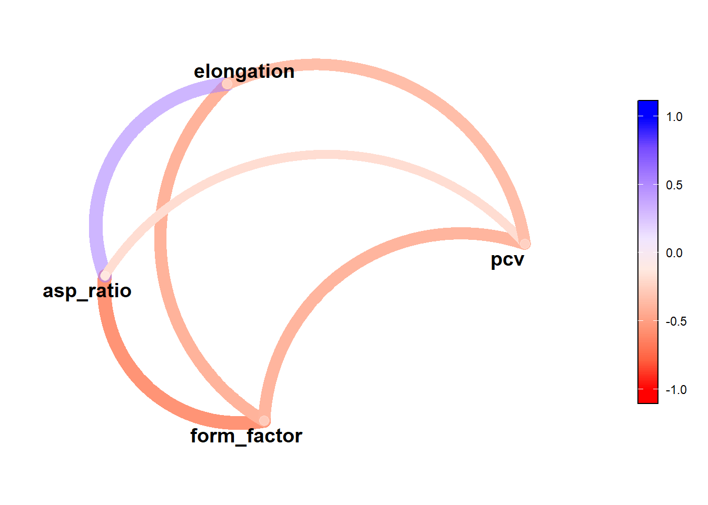
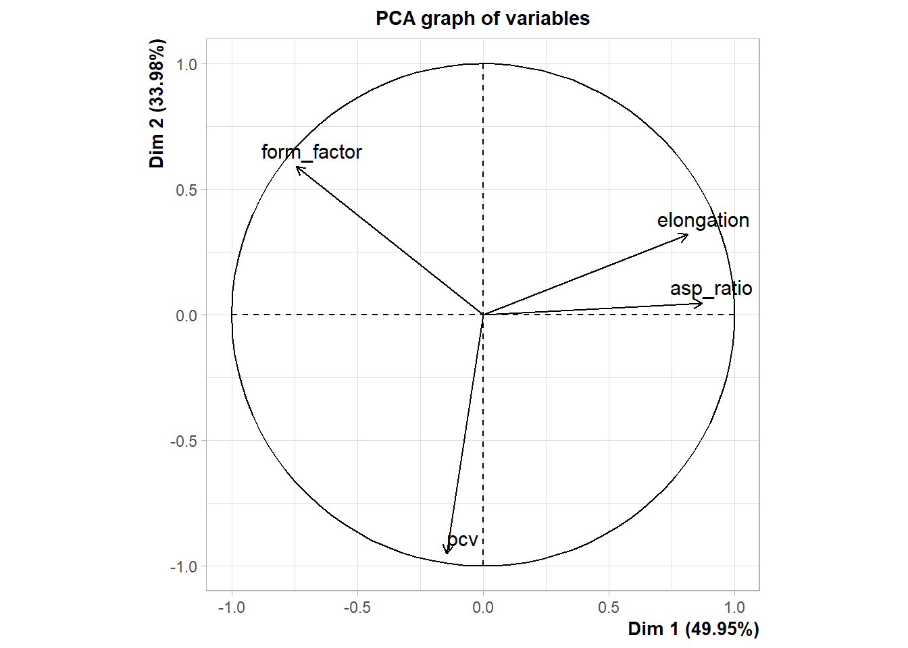
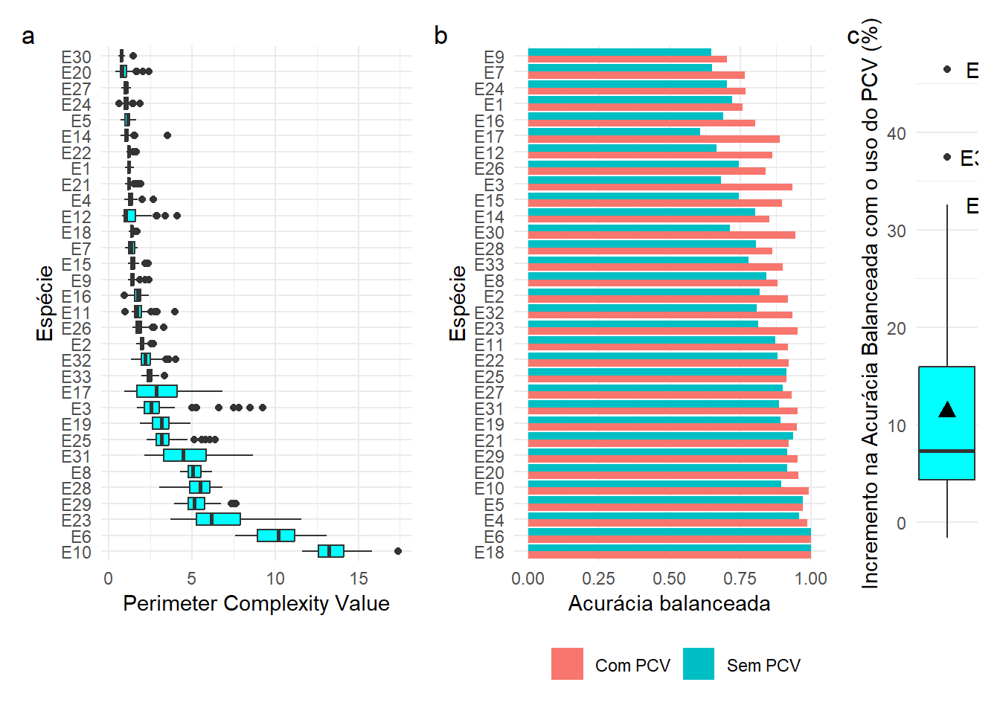

01: Model grain
1 Pacotes
To reproduce the examples of this material, the R packages the following packages are needed.
2 Objetos com diferentes complexidades
img <- image_import(c("E28_3300.jpg", "E20_2490.jpg", "E19_2475.jpg"), path = "imgs/pcv")
img[[1]] <- img[[1]] |> image_vreflect()
cont <-
object_contour(
img,
index = "B",
watershed = FALSE
)

sapply(cont, poly_circularity_haralick)
## E28_3300.jpg.1 E20_2490.jpg.1 E19_2475.jpg.1
## 3.495302 7.586232 4.601331
sapply(cont, poly_solidity)
## E28_3300.jpg.1 E20_2490.jpg.1 E19_2475.jpg.1
## 0.6115942 0.9962588 0.8894701
dfp <-
bind_rows(
cont[[2]][[1]] |> as.data.frame() |> mutate(exemplo = "Folha 1"),
cont[[3]][[1]] |> as.data.frame() |> mutate(exemplo = "Folha 2"),
cont[[1]][[1]] |> as.data.frame() |> mutate(exemplo = "Folha 3")
)
ggplot(dfp, aes(V1, V2)) +
geom_polygon(aes(fill = exemplo)) +
facet_wrap(~exemplo) +
theme_void() +
theme(legend.position = "bottom",
strip.text = element_blank()) +
coord_fixed() +
labs(fill = "")
a1 <- cont[[1]][[1]]
a2 <- conv_hull(cont[[1]])[[1]]
dfch <-
bind_rows(
a1 |> as.data.frame() |> mutate(exemplo = "A"),
a2 |> as.data.frame() |> mutate(exemplo = "A(PC)")
)
ggplot(dfch, aes(V1, V2)) +
geom_polygon(aes(fill = exemplo),
alpha = 0.5,
data = dfch |> filter(exemplo == "A(PC)")) +
geom_polygon(aes(fill = exemplo),
data = dfch |> filter(exemplo == "A")) +
# facet_wrap(~exemplo) +
theme_void() +
theme(legend.position = "bottom",
strip.text = element_blank()) +
coord_fixed() +
labs(fill = "")3 Problemática
img1 <- image_import("imgs/pcv/E10_1487.jpg")
cont2 <-
object_contour(
img1,
index = "B",
watershed = FALSE
)[[1]]
ef <- efourier(cont2, nharm = 10) |> efourier_inv(nharm = 10, npoints = 3982)
plot_polygon(ef)poly_circularity_norm(list(cont2, ef))
## [1] 0.2853730 0.6850459
poly_solidity(list(cont2, ef))
## [1] 0.9271728 0.9780796
poly_pcv(list(cont2, ef))
## [1] 3.01408648 0.01275893
dfp2 <-
bind_rows(
cont2 |> as.data.frame() |> mutate(exemplo = "Folha 1"),
ef |> unclass() |> as.data.frame() |> set_names(c("V1", "V2")) |> mutate(exemplo = "Folha 2")
)
ggplot(dfp2, aes(V1, V2)) +
geom_polygon(aes(fill = exemplo)) +
facet_wrap(~exemplo) +
# theme_void() +
theme(legend.position = "bottom",
strip.text = element_blank()) +
coord_fixed() +
labs(fill = "")4 Teoria
library(ggforce)
ggplot(dfp2, aes(V1, V2)) +
geom_polygon(data = dfp2 |> filter(exemplo == "Folha 1"),
fill = "salmon") +
geom_path(aes(color = exemplo), size = 1) +
theme_bw() +
scale_color_manual(values = c("blue", "red"),
labels = c("Perímetro original", "Perímetro suavizado")) +
theme(legend.position = "bottom",
strip.text = element_blank()) +
labs(fill = "") +
facet_zoom(xlim = c(400, 850), ylim = c(700, 790),
zoom.size = 2) +
scale_x_continuous(breaks = NULL) +
scale_y_continuous(breaks = NULL) +
labs(x = NULL,
y = NULL,
color = "")ggsave("figs/conceito_pcv.jpg",
width = 10,
height = 3)5 Funçao para pcv
poly_pcv <- function(x, niter = 500){
complexity <- function(x, niter){
x_smoth <- poly_smooth(x, niter = niter, plot = FALSE)
dists <- sqrt((x[, 1] - x_smoth[, 1]) ^ 2 + (x[, 2] - x_smoth[, 2]) ^ 2)
perim <- poly_perimeter(x)
pcv <- (sum(dists) * sd(dists) ) / perim
return(pcv)
}
if (inherits(x, "list")) {
sapply(x, complexity, niter)
} else{
return(complexity(x, niter))
}
}6 Analisar as imagens
img <- image_import(pattern = "E", path = "imgs/pcv")
# Contorno
cont <- lapply(img, function(x){
object_contour(x,
index = "B",
watershed = FALSE)[[1]]
})
# Contorno suavizado
cont_smooth <- poly_smooth(cont, niter = 500, plot = FALSE)
#
for(i in seq_along(img)){
jpeg(paste0("imgs/pcv/proc/", names(img)[[i]]), width = 6400, height = 4800)
plot(img[[i]])
plot_contour(cont[[i]], col = "red", lwd = 2)
plot_contour(cont_smooth[[i]], col = "blue", lwd = 2)
dev.off()
}6.1 Impacto da resolução
res <- c(50, 100, 150, 200)
img <- image_import("imgs/pcv/E10_1487.jpg")
img <- image_import("imgs/pcv/E5_1200.jpg")
plot(img)
pcv_h <-
sapply(1:length(res), function(x){
imgt <- img |> image_resize(rel_size = res[x])
cont <- object_contour(imgt,
index = "B",
watershed = FALSE,
plot = FALSE)
print(nrow(imgt))
data.frame(pcv = poly_pcv(cont[[1]]),
npp = nrow(cont[[1]]),
perim = poly_perimeter(cont[[1]]))
})
t(pcv_h)7 Application to Flavia dataset
7.1 Compute the PCV and other shape features
res <-
analyze_objects(pattern = "E",
index = "B",
dir_original = "imgs/flavia",
watershed = FALSE,
fill_hull = TRUE,
parallel = TRUE,
workers = 4,
pcv_niter = 500,
pcv = TRUE)
meas <- get_measures(res)$results |> separate_col(img, into = c("specie", "img"))
export(meas, "data/pcv.csv")7.2 Random Forest
7.2.1 With PCV
df_pcv <-
import("data/pcv.csv") |>
select(specie, form_factor, asp_ratio, elongation, pcv)
# best model
control <-
trainControl(method = 'cv',
p = 0.7,
number = 10,
verboseIter = TRUE)
fitpcv <- train(specie ~ .,
data = df_pcv,
method = 'rf',
tuneGrid = expand.grid(.mtry = 7),
trControl = control,
ntree = 300)
## + Fold01: mtry=7
## - Fold01: mtry=7
## + Fold02: mtry=7
## - Fold02: mtry=7
## + Fold03: mtry=7
## - Fold03: mtry=7
## + Fold04: mtry=7
## - Fold04: mtry=7
## + Fold05: mtry=7
## - Fold05: mtry=7
## + Fold06: mtry=7
## - Fold06: mtry=7
## + Fold07: mtry=7
## - Fold07: mtry=7
## + Fold08: mtry=7
## - Fold08: mtry=7
## + Fold09: mtry=7
## - Fold09: mtry=7
## + Fold10: mtry=7
## - Fold10: mtry=7
## Aggregating results
## Fitting final model on full training set
print(fitpcv)
## Random Forest
##
## 1907 samples
## 4 predictor
## 32 classes: 'E1', 'E10', 'E11', 'E12', 'E14', 'E15', 'E16', 'E17', 'E18', 'E19', 'E2', 'E20', 'E21', 'E22', 'E23', 'E24', 'E25', 'E26', 'E27', 'E28', 'E29', 'E3', 'E30', 'E31', 'E32', 'E33', 'E4', 'E5', 'E6', 'E7', 'E8', 'E9'
##
## No pre-processing
## Resampling: Cross-Validated (10 fold)
## Summary of sample sizes: 1716, 1717, 1719, 1719, 1714, 1716, ...
## Resampling results:
##
## Accuracy Kappa
## 0.8065346 0.8001796
##
## Tuning parameter 'mtry' was held constant at a value of 7
cm_pcv <- confusionMatrix.train(fitpcv, norm = "none")
stats_pcv <-
confusionMatrix(cm_pcv$table)$byClass |>
as.data.frame() |>
rownames_to_column("specie") |>
mutate(specie = str_remove(specie, "Class: "),
type = "Com PCV")
cmcom <-
ggplot(data.frame(cm_pcv$table), aes(Prediction, Reference, fill = Freq)) +
geom_tile() +
labs(x = NULL,
y = NULL) +
scale_x_discrete(expand = expansion(0)) +
scale_y_discrete(expand = expansion(0)) +
scale_fill_gradient2() +
geom_text(aes(label = Freq),
size = 2) +
theme(panel.border = element_rect(color = "black", fill = NA),
axis.text = element_text( size = 7),
axis.text.x = element_text(angle = 90, vjust = 0.5,
hjust = 1))7.2.2 Without PCV
df <-
import("data/pcv.csv") |>
select(specie, form_factor, asp_ratio, elongation)
# best model
control <-
trainControl(method = 'cv',
p = 0.7,
number = 10,
verboseIter = TRUE)
fit <- train(specie ~ .,
data = df,
method = 'rf',
tuneGrid = expand.grid(.mtry = 7),
trControl = control,
ntree = 300)
## + Fold01: mtry=7
## - Fold01: mtry=7
## + Fold02: mtry=7
## - Fold02: mtry=7
## + Fold03: mtry=7
## - Fold03: mtry=7
## + Fold04: mtry=7
## - Fold04: mtry=7
## + Fold05: mtry=7
## - Fold05: mtry=7
## + Fold06: mtry=7
## - Fold06: mtry=7
## + Fold07: mtry=7
## - Fold07: mtry=7
## + Fold08: mtry=7
## - Fold08: mtry=7
## + Fold09: mtry=7
## - Fold09: mtry=7
## + Fold10: mtry=7
## - Fold10: mtry=7
## Aggregating results
## Fitting final model on full training set
print(fit)
## Random Forest
##
## 1907 samples
## 3 predictor
## 32 classes: 'E1', 'E10', 'E11', 'E12', 'E14', 'E15', 'E16', 'E17', 'E18', 'E19', 'E2', 'E20', 'E21', 'E22', 'E23', 'E24', 'E25', 'E26', 'E27', 'E28', 'E29', 'E3', 'E30', 'E31', 'E32', 'E33', 'E4', 'E5', 'E6', 'E7', 'E8', 'E9'
##
## No pre-processing
## Resampling: Cross-Validated (10 fold)
## Summary of sample sizes: 1714, 1717, 1715, 1714, 1717, 1715, ...
## Resampling results:
##
## Accuracy Kappa
## 0.6565264 0.6452642
##
## Tuning parameter 'mtry' was held constant at a value of 7
cm <- confusionMatrix.train(fit, norm = "none")
stats <-
confusionMatrix(cm$table)$byClass |>
as.data.frame() |>
rownames_to_column("specie") |>
mutate(specie = str_remove(specie, "Class: "),
type = "Sem PCV")
cmsem <-
ggplot(data.frame(cm$table), aes(Prediction, Reference, fill = Freq)) +
geom_tile() +
labs(x = NULL,
y = NULL) +
scale_x_discrete(expand = expansion(0)) +
scale_y_discrete(expand = expansion(0)) +
scale_fill_gradient2() +
geom_text(aes(label = Freq),
size = 2) +
theme(panel.border = element_rect(color = "black", fill = NA),
axis.text = element_text( size = 7),
axis.text.x = element_text(angle = 90, vjust = 0.5,
hjust = 1))
arrange_ggplot(cmsem, cmcom, ncol = 1)
ggsave("figs/cm_com.jpg",
width = 5,
height = 6)8 PCV
pcv_esp <-
ggplot(df_pcv, aes(x = pcv, y = reorder(specie, -pcv))) +
geom_boxplot(fill = "cyan") +
theme_minimal() +
labs(x = "Perimeter Complexity Value",
y = "Espécie")
ggsave("figs/pcv_flavia.jpg",
width = 6,
height = 6)9 Correlação
corr_coef(df_pcv) |> network_plot(show = "all")
library(factoextra)
library(FactoMineR)
pca <- PCA(df_pcv,
quali.sup = 1)
fviz_pca_biplot(pca,
habillage = 1,
geom.ind = "point") +
theme(legend.position = "none")
dfm <-
df_pcv |> mean_by(specie)10 Accuracy
dfplot <-
bind_rows(stats, stats_pcv)
acc <-
ggplot(dfplot, aes(`Balanced Accuracy`, reorder(specie, -`Balanced Accuracy`), fill = type)) +
geom_col(position = position_dodge(),
alpha = 1) +
theme_minimal() +
labs(y = "Espécie",
x = "Acurácia balanceada",
fill = "") +
theme(legend.position = "bottom")11 Incremento
dfinc <-
dfplot |>
select(specie, type, `Balanced Accuracy`) |>
pivot_wider(names_from = type, values_from = `Balanced Accuracy`) |>
mutate(increment = (`Com PCV` - `Sem PCV`) / `Sem PCV` * 100,
label = ifelse(increment > 30, specie, NA))
increment <-
ggplot(dfinc, aes(y = increment)) +
geom_boxplot(fill = "cyan") +
labs(y = "Incremento na Acurácia Balanceada com o uso do PCV (%)",
x = NULL) +
stat_summary(fun = mean,
aes(x = 0),
geom = "point",
shape = 17,
size = 3) +
theme_minimal() +
geom_text(aes(x = 0, y = increment, label = label),
hjust = -0.5) +
theme(axis.text.x = element_blank(),
panel.grid.major.x = element_blank(),
panel.grid.minor.x = element_blank())
library(metan)
arrange_ggplot(pcv_esp, acc, increment,
ncol = 3,
widths = c(0.5, 0.5, 0.1),
tag_levels = "a")
ggsave("figs/pcv_accuracia_flavia.jpg",
width = 12,
height = 6)12 Section info
sessionInfo()
## R version 4.3.3 (2024-02-29 ucrt)
## Platform: x86_64-w64-mingw32/x64 (64-bit)
## Running under: Windows 11 x64 (build 22631)
##
## Matrix products: default
##
##
## locale:
## [1] LC_COLLATE=Portuguese_Brazil.utf8 LC_CTYPE=Portuguese_Brazil.utf8
## [3] LC_MONETARY=Portuguese_Brazil.utf8 LC_NUMERIC=C
## [5] LC_TIME=Portuguese_Brazil.utf8
##
## time zone: America/Sao_Paulo
## tzcode source: internal
##
## attached base packages:
## [1] stats graphics grDevices utils datasets methods base
##
## other attached packages:
## [1] FactoMineR_2.11 ggforce_0.4.2 metan_1.18.0 pliman_2.1.0.9000
## [5] caret_6.0-94 lattice_0.22-5 factoextra_1.0.7 lubridate_1.9.3
## [9] forcats_1.0.0 stringr_1.5.1 dplyr_1.1.4 purrr_1.0.2
## [13] readr_2.1.5 tidyr_1.3.1 tibble_3.2.1 ggplot2_3.5.0
## [17] tidyverse_2.0.0 rio_1.0.1
##
## loaded via a namespace (and not attached):
## [1] splines_4.3.3 later_1.3.2 bitops_1.0-7
## [4] R.oo_1.26.0 polyclip_1.10-6 hardhat_1.3.1
## [7] pROC_1.18.5 rpart_4.1.23 lifecycle_1.0.4
## [10] rstatix_0.7.2 sf_1.0-16 globals_0.16.3
## [13] MASS_7.3-60.0.1 flashClust_1.01-2 crosstalk_1.2.1
## [16] backports_1.4.1 exactextractr_0.10.0 magrittr_2.0.3
## [19] rmarkdown_2.26 yaml_2.3.8 httpuv_1.6.15
## [22] sp_2.1-3 DBI_1.2.2 minqa_1.2.6
## [25] RColorBrewer_1.1-3 multcomp_1.4-25 abind_1.4-5
## [28] R.utils_2.12.3 BiocGenerics_0.46.0 RCurl_1.98-1.14
## [31] nnet_7.3-19 TH.data_1.1-2 tweenr_2.0.3
## [34] sandwich_3.1-0 ipred_0.9-14 satellite_1.0.5
## [37] lava_1.8.0 ggrepel_0.9.5 listenv_0.9.1
## [40] terra_1.7-71 units_0.8-5 parallelly_1.37.1
## [43] codetools_0.2-19 DT_0.33 tidyselect_1.2.1
## [46] raster_3.6-26 farver_2.1.1 lme4_1.1-35.2
## [49] stats4_4.3.3 base64enc_0.1-3 mathjaxr_1.6-0
## [52] jsonlite_1.8.8 e1071_1.7-14 survival_3.5-8
## [55] iterators_1.0.14 emmeans_1.10.1 systemfonts_1.0.6
## [58] foreach_1.5.2 tools_4.3.3 ragg_1.3.0
## [61] Rcpp_1.0.12 glue_1.7.0 prodlim_2023.08.28
## [64] xfun_0.43 EBImage_4.42.0 withr_3.0.0
## [67] numDeriv_2016.8-1.1 fastmap_1.1.1 GGally_2.2.1
## [70] boot_1.3-29 fansi_1.0.6 digest_0.6.35
## [73] mapedit_0.6.0 timechange_0.3.0 R6_2.5.1
## [76] mime_0.12 estimability_1.5 textshaping_0.3.7
## [79] colorspace_2.1-0 jpeg_0.1-10 R.methodsS3_1.8.2
## [82] utf8_1.2.4 generics_0.1.3 data.table_1.15.4
## [85] recipes_1.0.10 class_7.3-22 htmlwidgets_1.6.4
## [88] scatterplot3d_0.3-44 ggstats_0.6.0 ModelMetrics_1.2.2.2
## [91] pkgconfig_2.0.3 gtable_0.3.5 timeDate_4032.109
## [94] htmltools_0.5.8 carData_3.0-5 fftwtools_0.9-11
## [97] multcompView_0.1-10 scales_1.3.0 leaps_3.1
## [100] png_0.1-8 gower_1.0.1 knitr_1.46
## [103] rstudioapi_0.16.0 tzdb_0.4.0 reshape2_1.4.4
## [106] coda_0.19-4.1 nlme_3.1-164 nloptr_2.0.3
## [109] proxy_0.4-27 zoo_1.8-12 KernSmooth_2.23-22
## [112] parallel_4.3.3 pillar_1.9.0 grid_4.3.3
## [115] vctrs_0.6.5 ggpubr_0.6.0 promises_1.2.1
## [118] randomForest_4.7-1.1 mapview_2.11.2 car_3.1-2
## [121] xtable_1.8-4 cluster_2.1.6 evaluate_0.23
## [124] mvtnorm_1.2-4 cli_3.6.1 locfit_1.5-9.9
## [127] compiler_4.3.3 rlang_1.1.3 ggsignif_0.6.4
## [130] future.apply_1.11.2 labeling_0.4.3 classInt_0.4-10
## [133] plyr_1.8.9 stringi_1.8.3 lmerTest_3.1-3
## [136] munsell_0.5.1 leaflet_2.2.2 tiff_0.1-12
## [139] Matrix_1.6-5 hms_1.1.3 patchwork_1.2.0
## [142] leafem_0.2.3 future_1.33.2 shiny_1.8.1.1
## [145] broom_1.0.5